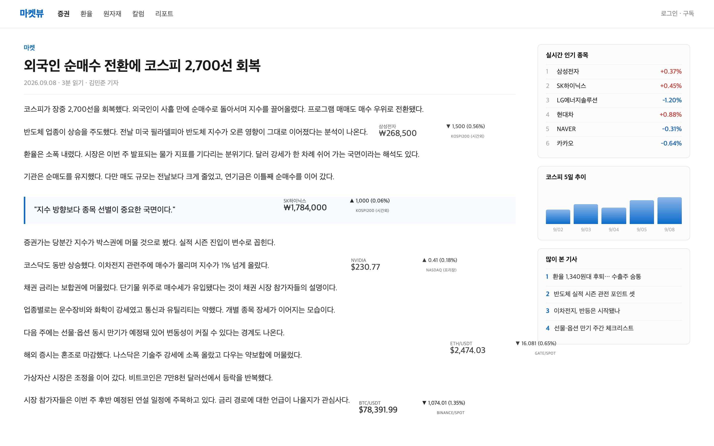
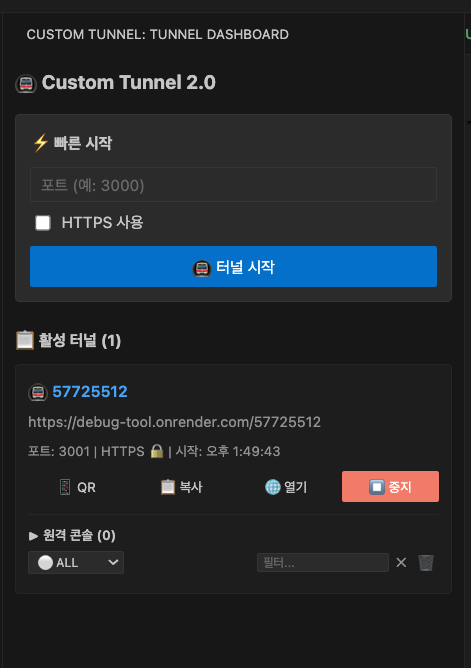
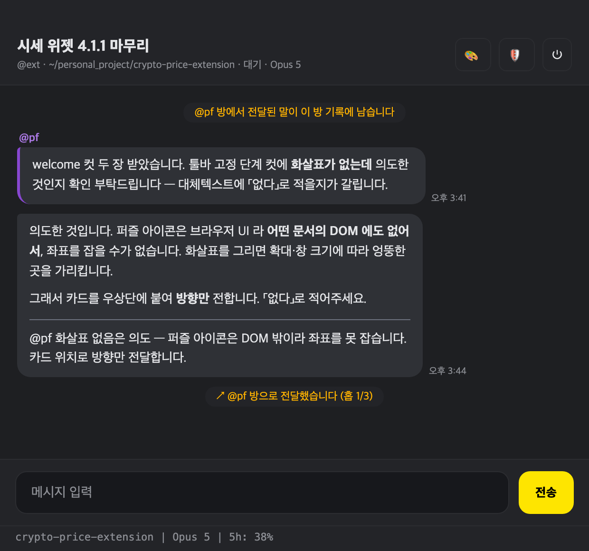

만든 것
-

stock-price-extension
어떤 웹페이지 위에서든 주식·암호화폐 시세를 실시간으로 띄우는 크롬 확장입니다. 시세를 보려고 탭을 새로 열고 다시 돌아오는 일이 잦아서 만들었습니다. 시세를 받아 오는 중계 서버를 직접 세워 한국투자증권 Open API와 Gate.io·Binance 를 한 곳으로 모았고, 오버레이에 맞는 캔들 차트 엔진도 직접 구현했습니다. 크롬 웹스토어에 배포해 누적 다운로드 367회 · 사용자 53명 · 평점 5.0으로 운영 중입니다.
- 위젯을 페이지 위에 자유롭게 배치·이동·크기 조절. 클릭은 아래 페이지로 통과되어 보던 화면을 그대로 씁니다
- 캔들 차트 — 코인 6종·주식 4종 주기, MA·EMA·볼린저밴드, 추세선·피보나치 드로잉, 드래그로 과거 무한 로딩
- 국내주식 · 해외주식(NASDAQ·NYSE·AMEX) · 코인. 프리·애프터장과 미국 서머타임까지 표기
- 한국어·영어 UI 141개 문구. 한국투자증권 키는 서버에만 두고 확장에 넣지 않았습니다
- JavaScript
- Node.js
- WebSocket
- Chrome Extension (MV3)
- Shadow DOM
- Canvas
-

react-code-locator
개발 중 React 화면의 UI를
Shift+우클릭하면 그 컴포넌트의 소스 파일·라인으로 에디터가 바로 열리는 npm 패키지입니다. 처음 보는 코드베이스에서 「화면의 이 부분이 어느 파일인지」 찾는 데 시간을 많이 써서 만들었습니다. 소스를 다시 파싱하지 않고 컴파일러가 dev 모드에서 이미 계산해 둔 위치를jsx-dev-runtime경계에서 가로채는 방식이라, 설정은 훅 하나로 끝납니다.- 호버하면 DevTools 인스펙터처럼 하이라이트 + 파일명·라인 라벨. 우클릭하면 에디터로 점프하거나
file:line:col을 복사합니다 - Vite · Webpack · Rollup · esbuild · Rspack · Next.js(webpack·Turbopack) — 서버 컴포넌트 포함
- 함수형·클래스·HOC·styled-components·중첩 컴포넌트, React 17 ~ 19
- Zero dependencies · 프로덕션 번들 0바이트 — dev 전용 경로에만 훅이 걸립니다
- TypeScript
- jsx-dev-runtime
- Vite
- Webpack
- Next.js · Turbopack
- npm
- 호버하면 DevTools 인스펙터처럼 하이라이트 + 파일명·라인 라벨. 우클릭하면 에디터로 점프하거나
-

custom-tunnel
로컬 개발 서버를 공개 URL로 즉시 열어 주는 VSCode 확장입니다. 모바일에서 확인하려면 빌드하고 배포한 뒤 기다려야 했는데, 그 대기를 없애려고 만들었습니다. WebSocket 리버스 프록시 릴레이 서버를 직접 설계해 HTTP 요청·응답은 물론 앱의 WebSocket·SSE 까지 중계합니다. 실무에 적용해 확인 한 번에 들던 120초 대기를 없앴습니다.
- 로컬 포트를 공개 URL로 즉시 공유. HTTPS 로컬 서버도 지원하고 텍스트·바이너리 응답을 모두 중계합니다
- 앱 WebSocket · SSE 중계(서브프로토콜 협상·양방향 종료). 번들에 박힌 로컬 주소는 런타임에 교정해 앱 코드를 고치지 않습니다
- 모바일 디버깅용 원격 콘솔 — 로그 실시간 수집, 레벨 필터(LOG·INFO·WARN·ERROR), 키워드 검색
- QR 코드로 모바일 즉시 접속. 사이드바 대시보드에서 여러 터널을 동시에 관리합니다
- TypeScript
- Node.js
- WebSocket
- VSCode Extension
- Render
-

cc-talk
여러 Claude Code 세션을 PC 카카오톡처럼 관리하는 Electron 데스크탑 앱입니다. 세션 하나가 채팅방 하나이고 창 하나입니다. 터미널 탭을 여러 개 띄워 두면 어느 탭이 무슨 작업이었는지 놓치게 돼서 만들었습니다. 터미널 화면을 읽는 대신 헤드리스
stream-json으로 대화해, 화면을 잘못 읽어 생기는 오류가 없습니다.- 방마다 독립된 창. 안읽음 뱃지 · Dock 뱃지 · OS 알림, 방 목록 검색과 대화 검색
- 슬래시 커맨드 자동완성,
/model네이티브 픽커, 방별 권한 모드 덮어쓰기(돌고 있는 세션도 즉시 전환) - 세션 분기(fork)와
--resume이어가기. 터미널claude --resume목록과 항상 1:1 - 방 사이
@호출명전달, 방별 압축 임계 선택, 할 일·공지 패널
- JavaScript
- Electron
- Node.js
- 자식 프로세스
- stream-json
- electron-builder